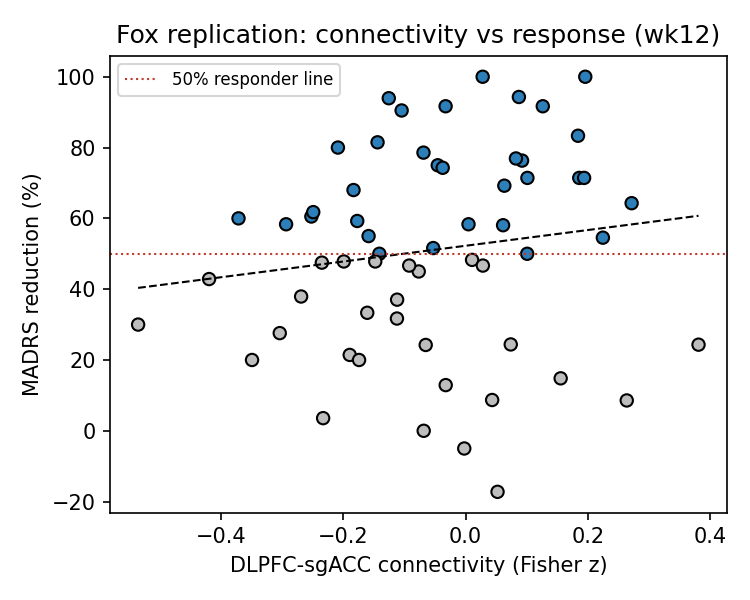
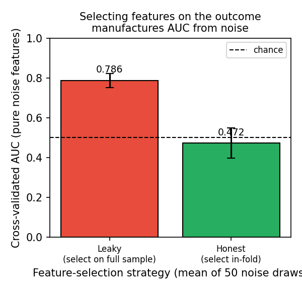

Case study, neural data science
Replicating an rTMS biomarker, and catching a circular result
TL;DR
- The widely cited DLPFC-sgACC connectivity biomarker for rTMS response did not replicate on a public dataset (r = +0.14, p = 0.27, and the sign points the wrong way).
- The dataset's best-looking result, AUC 0.914, comes from features that were defined using the same outcome labels it predicts. That is circular analysis, so it is not an out-of-sample estimate.
- A non-circular version, using features the original authors derived on a training split only, still reaches AUC 0.903 on 18 held-out patients. So the honest claim is not "there is nothing here", but "the 0.914 can't be read as accuracy."
The question
rTMS helps some people with treatment-resistant depression and does nothing for others, and there is no reliable way to tell in advance who will respond. The most-cited candidate predictor comes from Fox et al. (2012): DLPFC stimulation sites that are more anticorrelated with the subgenual anterior cingulate cortex (sgACC) were associated with better outcomes.
Fox's analysis was at the level of stimulation sites, using normative connectivity from a separate healthy cohort. It never compared an individual patient's own connectivity against that patient's own outcome. The field has since stretched it into an individual-level predictor, and that stretch is what I tested.
The data
Hopman et al. (2021) released pre-treatment resting-state connectivity and MADRS outcomes for patients treated with rTMS for treatment-resistant depression. A responder is a patient with at least a 50% MADRS reduction at week 12. The analysis sample is n = 61 (33 responders, 28 non-responders).
Two subjects have connectivity data but no week-12 score. A naive pct_change >= 50 would silently label them non-responders, because NaN >= 50 evaluates to false, even though their week-4 improvements were 100% and 85%. I excluded them explicitly, matching how the original authors coded them.
Finding 1: the biomarker doesn't replicate
DLPFC-sgACC connectivity shows no meaningful relationship with improvement: r = +0.144 (permutation p = 0.267), with a cross-validated AUC of 0.613 (p = 0.071). The global-signal-regression variant is weaker still (r = +0.064, p = 0.602). The original Hopman authors also could not confirm the link.

Two caveats keep this honest. First, a positive r means less anticorrelation goes with slightly better response, the opposite of Fox's prediction, so this is not a near miss. Second, at n = 61 the study only has 80% power for |r| ≥ 0.35. This is absence of evidence at the effect size the dataset can detect, not proof of no effect.
Screening all six label-independent connectivity features in the release, the strongest was not the Fox feature but a sgACC-to-middle-frontal-gyrus measure (r = +0.32, p = 0.012 uncorrected). It does not survive correction for six tests (p = 0.070), so it is a lead, not a finding.
Finding 2: the 0.914 is circular
The release also includes four seed-based features from a sheet named SBA_RvsN, for "responders versus non-responders." Those clusters were located by contrasting the two outcome groups in this same sample. A random forest on them reaches AUC 0.914, and one cluster alone reaches 0.870. A multivariate model that barely beats one pre-selected cluster is what selection on the outcome looks like.
To show the mechanism directly, I generated 200 pure-noise features for the same 61 patients, kept the top 4, and cross-validated two ways, averaged over 50 independent noise draws:

This is double dipping in the sense of Kriegeskorte et al. (2009). The exact size of the inflation depends on how many features are screened and kept, so only the gap between the two bars is meaningful, not its level.
Finding 3: but there may be real signal
The authors were not naive about this. They also released a version of the seed-based contrast computed on a training subset only, with their own 42/18 split. Training on those 42 and testing on the 18 patients never used to define the features gives held-out AUC 0.903 (permutation p = 0.002).
That changes the right conclusion. The 0.914 still can't be read as out-of-sample accuracy, but the regions may carry real signal. The held-out check is fragile, with 18 patients, only 6 responders, and an unstratified split, so it is a reason for a properly powered replication, not a result to build on.
I also compared predicting the binary responder label against predicting continuous MADRS improvement, on the same features and folds, as an adaptation of the dimensional framing in Wade et al. (2025). On the honest feature both sat at chance and the difference was not detectable (+0.012 AUC, p = 0.34), which says more about this dataset's power than about the idea.
What I'd do next
- Re-derive the seed clusters from the released whole-brain connectivity maps inside each training fold, which would replace the noise simulation with the real thing.
- Test pre-registered, label-independent features on a larger cohort such as EMBARC (n > 200), where effects this small could actually be detected.
The contribution here isn't the null result by itself. It's showing why the one impressive number in the dataset can't be believed as stated, and what the honest version of it looks like.
References
- Fox, M. D., et al. (2012). Efficacy of TMS targets for depression is related to intrinsic functional connectivity with the subgenual cingulate. Biological Psychiatry, 72(7), 595-603. doi
- Hopman, H. J., et al. (2021). Personalized prediction of transcranial magnetic stimulation clinical response in patients with treatment-refractory depression using neuroimaging biomarkers and machine learning. Journal of Affective Disorders, 290, 261-271. doi
- Hopman, H. J., et al. (2021). Data for: personalized prediction of transcranial magnetic stimulation clinical response. Data in Brief, 37, 107264. doi
- Kriegeskorte, N., et al. (2009). Circular analysis in systems neuroscience: the dangers of double dipping. Nature Neuroscience, 12(5), 535-540. doi
- Wade, B. S. C., et al. (2025). Predicting dimensional antidepressant response to repetitive transcranial magnetic stimulation using pretreatment resting-state functional connectivity. Nature Mental Health, 3, 1046-1056. doi